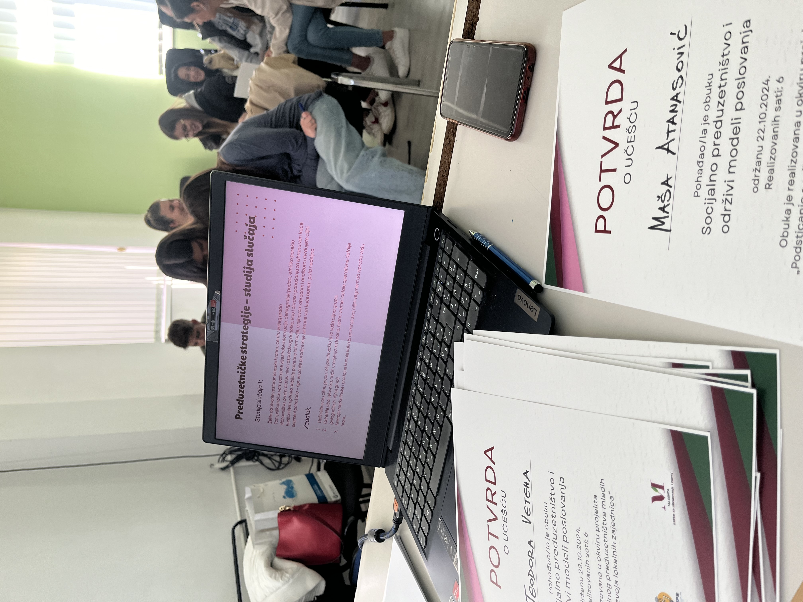
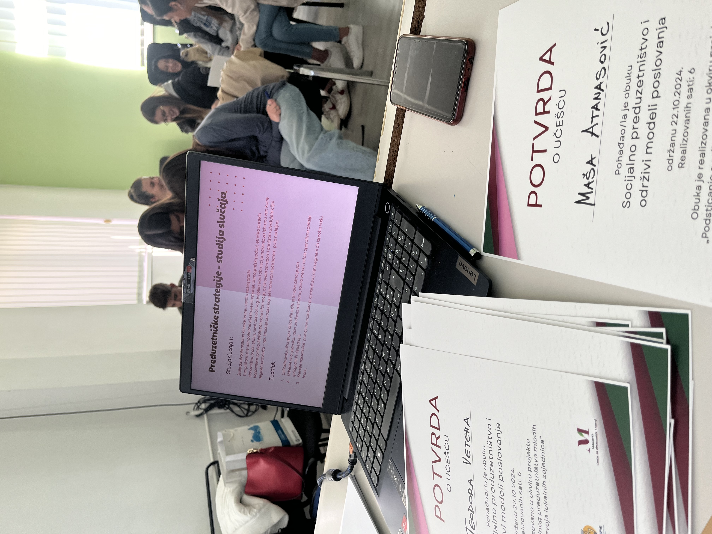

O projektu
Projekat „Podsticanje socijalnog preduzetništva mladih u cilju održivog razvoja lokalnih
zajednica“ ima za cilj unapređenje znanja i veština mladih u oblasti preduzetništva,
socijalnog preduzetništva i održivog razvoja. Projekat se fokusira na inkluziju mladih, na
održiv i uravnotežen regionalni razvoj.
Očekivani rezultati projekta „Podsticanje socijalnog preduzetništva mladih u cilju održivog
razvoja lokalnih zajednica“ usklađeni su sa ciljevima i merama Strategije za mlade u
Republici Srbiji za period od 2023. do 2030. godine i Akcionim planom za period od 2023.
do 2025. godine za sprovođenje strategije za mlade u Republici Srbiji za period od 2023. do
2030. godine.
Kroz projekat „Podsticanje socijalnog preduzetništva mladih u cilju održivog razvoja lokalnih
zajednica“ ostvaruju se ciljevi Strategije za mlade u Republici Srbiji, jer projekat daje
doprinos poboljšanju lokalnog i regionalnog preduzetničkog ekosistema.
Direktna ciljna grupa projekta su mladi (17-25 godina) koji su ili učenici viših razreda
srednjih škola, maturanti, ili studenti, ili NEET mladi (mladi koji koji nisu u sistemu
obrazovanja, nisu zapošljeni, nisu u sistemu stručnih obuka), koji žive u Istočnoj Srbiji,
uključujući i sela i manje razvijene opštine Istočne Srbije. Reč je o mladim ljudima iz Bora,
Negotina, Kladova, Majdanpeka i okolnih sela (Borski okrug).
Indirektna ciljna grupa su mladi (17-25 godina) iz drugih regiona Srbije i drugih ruralnih
sredina, oni koji nemaju priliku da pohađaju obuke u vreme kada se organizuju. Ovi mladi
ljudi će moći da pristupe obukama onlajn, u vreme koje im odgovara, s obzirom da će
materijal sa obuke biti pripremljen u digitalnoj formi i dostupan onlajn. To su mladi ljudi
kojima će treninzi biti dostupni i nakon završetka projekta (na veb-sajtu projekta).
Pretpostavljena veličina ove indirektne ciljne grupe je 100-150 mladih u svakom od 17
okruga uže Srbije (ukupno 1.700-2.550).

.jpg) 
